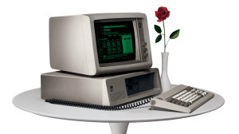
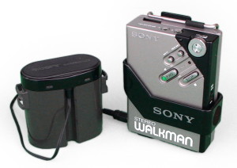
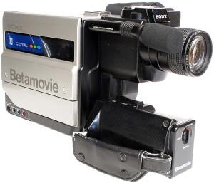
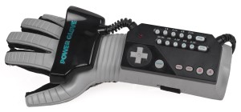

IBM Computadora Personal, 1981

Sin este invento trascendental en la historia humana probablemente le
único lugar donde encontraríamos computadoras en la actualidad sería
en las Universidades y en los cuarteles militares. Es imposible
imaginar lo distinta que sería nuestra vida sin las computadoras de
escritorio. Y además sin ellas Gordon y Joe no hubiesen tenido el
prototipo para su primer gran idea.
Sony Walkman WM2, 1981

Con toda la música al alcance de nuestra mano con los servicios de
streaming y saliendo de nuestros teléfonos celulares es difícil
imaginar una época en la que debíamos armar nuestros mix tapes en
cassettes para poder escuchar nuestras bandas favoritas en los
walkman!
Filmadora Sony Beta BCC 100p, 1984

Las grabadoras fueron las pioneras de las herramientas de grabación
portátil y personal, sin este aparatoso y totalmente incómodo equipo
los únicos capaces de grabar hubiesen sido los estudios de televisión
y películas. Ahora cualquiera puede ser un director con un Smartphone
y un poco de creatividad.
Motorola DynaTAC 8000X, 1984
Y sí, después de tanto hablar de ellos no podíamos dejarlos afuera.
Ese es Martin Cooper, inventor del Motorola Dyna TAC, el predecesor de
los Smartphones y el teléfono que cambio la forma en la que nos
comunicamos. La tecnología avanzó bastante desde este “ladrillo” y
ahora con dispositivos que caben en la palma de nuestra mano y tienen
internet quien sabrá que nos depara la evolución de estos
dispositivos.
Nintendo Power Glove, 1989

Los ’80 no fueron sólo un gran momento para las tecnologías de
comunicación, también se produjo la gran revolución de los
videojuegos. Y ahora que estamos viviendo la resurrección de la
Realidad Virtual no podemos olvidarnos de este infame (pero no por eso
menos querido) dispositivo creado por Nintendo. El Guante de Poder fue
una de las primeras intervenciones en la realidad virtual pero
lamentablemente la tecnología de la época y sus problemas de diseño no
ayudaron para que despegue.